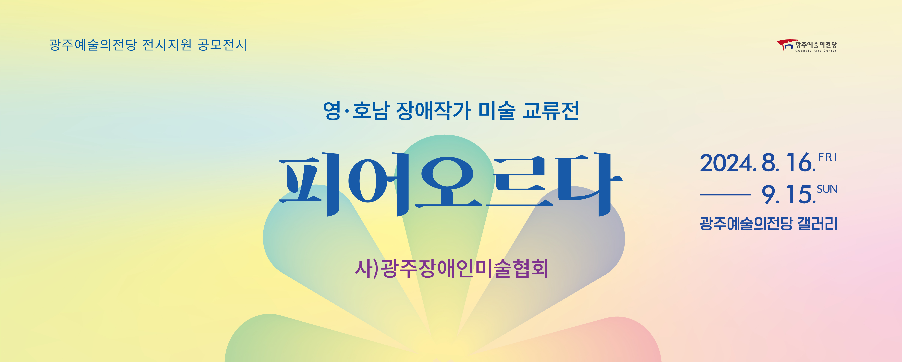

광주시립미술관
광주문화재단
Youtube
티켓예매
Ticket Reservation
공연일정
Schedule
예매확인/취소
Reservation/cancellation


Gwangju
Arts
Center
공지사항 및 소식
광주문화예술회관의 최신 소식을 만나보세요.
대관안내
정기대관 공고의 접수기간 내에 메일 또는 우편으로 신청해 주시기 바랍니다.
좌석배치도
관람을 원하시는 좌석을 선택하시면 해당 구역의 무대 시야를 확인 하실 수 있습니다.
오시는길
주차 공간이 협소하오니 대중교통을 이용해주시기 바랍니다.

광주예술의전당
광주예술의전당은 1991년에 개관한 이래 현재까지 명실상부한 광주의 문화중심지로 그 역할을 담당하고 있습니다. 전당에는 총 8개 예술단체 300여명의 단원이 소속되어 활발한 활동을 하고 있으며 전통음악과 교향악, 창극부터 발레에 이르기까지 다양한 장르의 수준 높은 공연을 시민들에게 선보여 문화예술의 저변확대와 지역 인재양성에 기여하고 있습니다.
시립예술단체 공연문의
062)613-8333
광주시립발레단
광주시립발레단은 예술의 고장 광주에서 1976년 10월에 창단된 직업 발레단으로서 올해로 39년이 되었다. 그동안 국내의 여러 도시를 순회하면서 스펙타클한 작품들을 공연하여 왔으며 다양한 작품들을 제작하였다.
2024-09-05
광주시립교향악단
1976년 창단된 광주시립교향악단은 연간 70회 이상 깊이 있고 수준 높은 연주를 선보이고 있다. 대부분의 공연을 매진시키며 문화수도 광주광역시에 다시 한번 클래식 붐을 일으키고 있다.
2024-09-05
광주광역시립극단
전국 최초 관립극단으로 1982년 창단됐던 (구)광주시립극단은 6년 만에 해체되는 상처를 딛고 2012년 4월 6일 지역민들의 오랜 염원이었던 광주광역시립극단이 24년 만에 재창단 되었다.
2024-09-05
2024 광주예술의전당 ‘갤러리’
관람시간
공연 있는 날 10:30 ~ 19:30
공연 없는 날 10:00 ~ 18:00
광주예술의전당 갤러리는 광주 시민들과 미술을 매개로 소통할 수 있는 열린 문화향유의 공간을 지향하며 2016년에 7월에 개관하였다. 대·소극장에 열리는 다채로운 공연과 현대미술을 함께 즐기며 모든 세대가 공감할 수 있는 문화의 산실로 나가고자 앞장서고 있다. 매년 회화, 조각, 공예, 설치 등 다양한 장르의 기획전시를 통해 국내·외 미술인의 작품 소개와 지역을 기반으로 활동하는 미술단체의 창작·연구 및 발표의 기회를 제공하고자 초대공모전도 실시하고 있다.